Wide analysis of QSlim Applied to Generated Convex Terrain
This is a writeup of the presentation and defence I gave for my bsc dissertation at university
I got a 1st for my disseration, I was told off the record that this was the highest scoring paper in that year group, which was surprising to me, but I have major imposter syndrome
This page is supplemtentry to the full research paper pdf avaliable below. I transcribed the presentation/defence I gave into this page but be aware these presentations mainly serve as an opportunity for the university staff to ask questions and get additional context for the actual research papers.
Additionally, I transcribed this 2 years after giving the defence and my memory of everything has faded a bit.
The project compared the accuray of the optimised mesh to a very high sample rate generated mesh - this high sample rate mesh is composed of millions of vertices and is very unoptimised.
QSlim's goal is to min-max geometry to shape accuracy using geometric deviation anaylsis. I compared it to the terrain generator configured to the same number of triangles as QSlim to see which was better able to represent the shape.
The research showed that QSlim could be used to very effectively reduce the geometry of these terrain meshes while maintaining high shape accuracy as compared to the terrain generator at teh same number of triangles.
This would allow savings in GPU memory for the mesh data and time to draw, with minimal sacrifcy to visual quality. However, in real time applications it may be impratical as the implementation of QSlim I used could take multiple minutes to optimise a mesh. Multi-threaded and Compute shader implementations of QSlim exist that are able to optimise a mesh in real time however.
Skills Used:C#, C++, Vulkan, Research, LATEX,
View the full project on github here! See the Paper here!
Qslim - Mesh Simplifier
Qslim is a mesh simplification algorithm first posed by Garland and Heckbert in the 1997 paper "Surface simplification using quadric error matrics".
This is done by computing a quadric error matrix for each vertex.
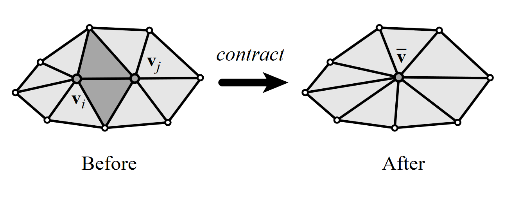
Illustraion of a half-edge contarction. Source: M. Garland and P. S. Heckbert, "Surface simplification using quadric error matrics" 1997Image of two wireframe Standford Bunnies. On the left, full resolution bunny @69k tris. The right bunny has been simplified to 999 triangles. Source: Own work/figcaption>
Qslim anyalsises every vertex in a mesh and builds a list of vertices ordered from least to most impactful to shape accuracy to remove.
These vertices are then removed using half edge contraction until the desired number of vertices has been reached or until the algorithm cannot remove any more vertices without breaking the mesh.
Terrain Generation Simplification (TGS)
For this expirement terrian generator samples a noise texture also known as a hieght map for a single float that is proccessed into a distance a vertex in the mesh is offset by.
Greater resolution can be achived in terrain meshes by decreasing the distances between vertices. This has the effect of sampling the noise texture at small intervals from the previous samples, which makes the terrain look less blocky and more natural.
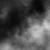
Example heightmap created with Terragan 18/03/2006 Source: Wikipedia
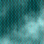
Height frequency sampling example of the heightmap.
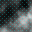
Low frequency sampling of the heightmap
Simplifying procedural terrain generated in this way is quite simple, dont generate such a large mesh to start with.
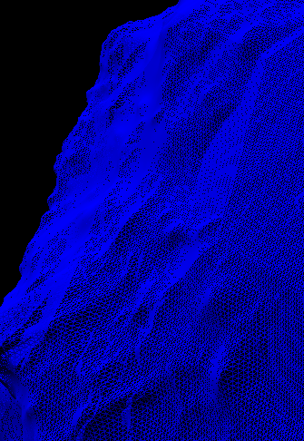
Example high frequency terrain (wireframe) Source: Own work
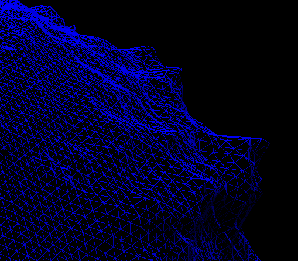
Example low frequency terrain (wireframe) Source: Own work
Hypotheses
In this expirment we tested whether Qslim could produce results that more accurately represented a high frequency terrain mesh than the terrain generator could do at a lower sample rate.
We conducted a wide anaylsis of Qslim evaluating how it handled varied input mesh size and reduction rates to determine which had the largest effect on accuracy.
We compared Qslim to the TGS algorithm to determine if it always produced more accurate results as we would expect and determined if it was useful tool in games which generated terrain in this manor.
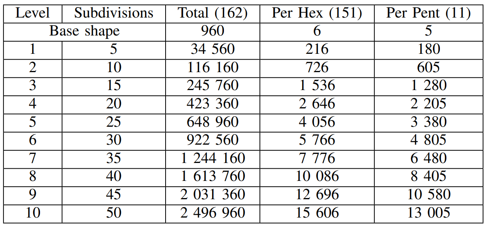
This table shows the various input mesh sizes in triangles and subdivisions. The base mesh is a Goldberg polyhedron consisting of 162 faces, 151 of those hexagons the remaining 11 are pentagons totaling 960 triangles. This base shape has each triangle subdivided a number of times to vary the input mesh size.
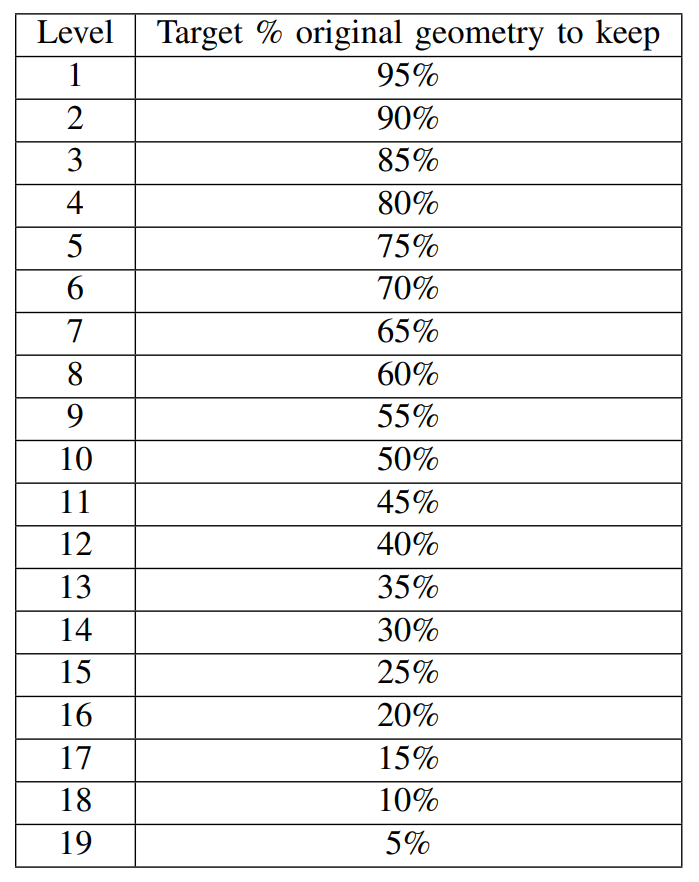
The amount of geometry kept at each reduction level expressed as a % of the original triangles. Source: Own work - research paper
Quantifying Quality - Geometric Deviation
In order to avoid having to ask people what they thought looked better Qslim or TGS, a way of quantifing the quality of each algorithm was needed. We decided to define quality as the accuracy each algorithm was able to maintain compared to a high resolution terrain mesh, with the reasonable assumption being if a high resolution terrain mesh looked the "best" then the best simplification algorithm is the one that manages to best match the original shape.
We used Geometric Deviation to determine this. Geometry Deviation is the minimum euclidean distance between each vertex on mesh A and a point on Mesh B, where mesh A is in this case is our high resoltuion referenece mesh and Mesh B is our simplified mesh.
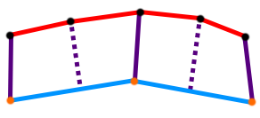
Author’s Diagram of Geometric Deviation. The red edge lines represent mesh A, the blue lines Mesh B
Left shows where the blue point (B) would be on Mesh A. Right shows where the two blue vertices from mesh A simplified to the single orange one would fall on Mesh B Source: Original Image from M. Garland and P. S. Heckbert, “Surface simplification using quadric error metrics” 1997, editing by the author
The point in on mesh B is along the plane of any triangle in Mesh B and the distance to that point is the deviation for the vertex.
This process can produces a number for the mean deviation of the whole mesh but the results can also be visualised in a heatmap form where blue shows no deviation and red is the most deviated vertex.
Geometric Devation heatmap (right) produced by calculating the Devation Qslimed standford bunny (left) as compared to the original (right) Source: Own work
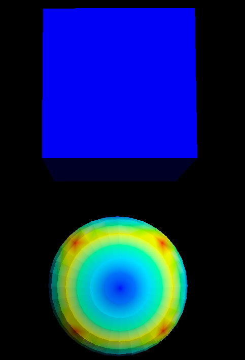
Geometruc Deviation heatmap of a sphere compared to a cube, note the four red blobs show the furthest points of the sphere from the cube, while the pole is blue indicating its exactly on the same plane as the cube's top face: Own work
This method was created and researched by Michaël Roy, Sebti Foufou, Frédéric Truchetet in Generic "Attribute Deviation Metric for Assessing Mesh Simplification Algorithm Quality" published in IEEE International Conference on Image Processing September 2002.
Experiment
The expirment runs through all the subdivision and reducetion rate levels on 10 randomly generated "planet" meshes each with a unique seed. The terrain generation algorithm is deterministic to the seed.
There are 10 planets, 10 subdivision levels, 19 reduction rate steps meaning each algorithm is subjected to 1900 discrete tests. 615 600 observations where made across the whole expirment
The tests where conducted in a custm vulkan graphics environment and followed this order of operations
Findings Pt1
These graphs show the comparison for 5-50 subdivisions and 5-55% reduction rate. Lower mean geometric deviation is better.
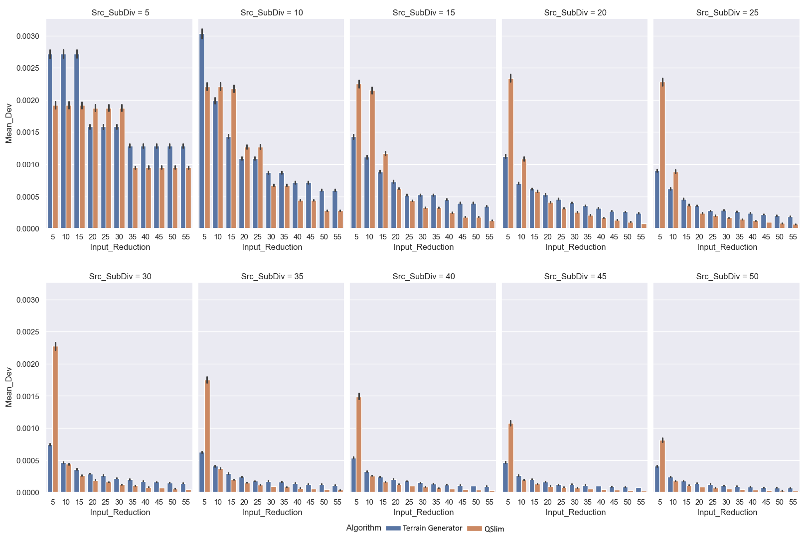
At 5% input reduction - Qslim produces more devation that TGS in all subdivision cases apart from 5 and 10.
Above 35% reduction rate, Qslim out performs TGS at every subdivision level.
The results also establish a trend that as reduction rate increases (that is more of the original mesh is kept) Qslim performs almost exponetially better that TGS
Findings Pt2
These graphs show the comparison for 5-50 subdivisions and 50-95% reduction rate. Lower mean geometric deviation is better.
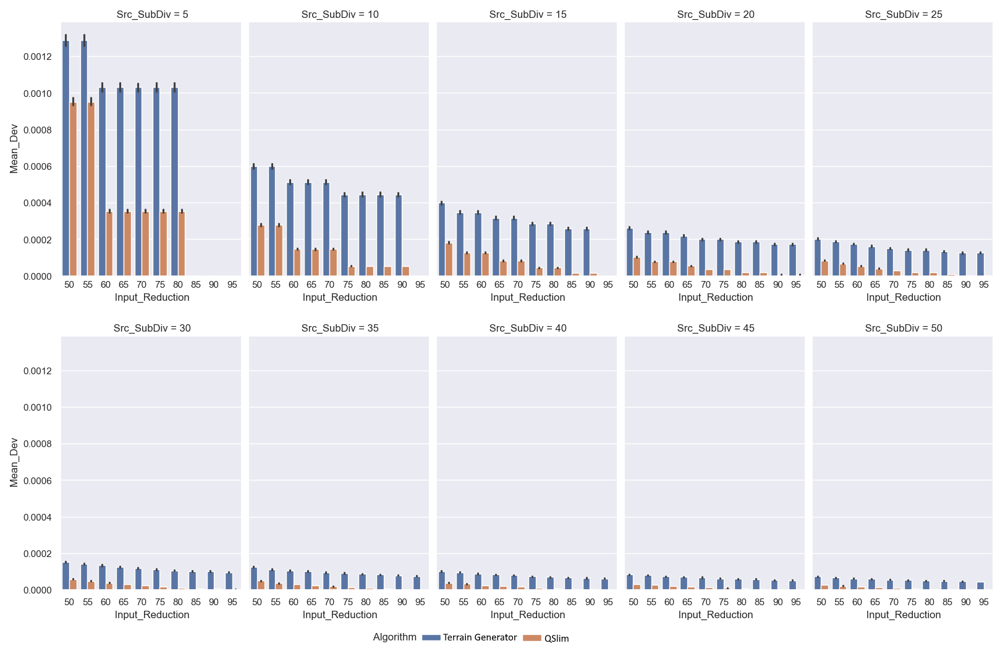
We continue to see the trend of Qslim doing much better than TGS at higher reduction rates here.
You will notice missing results for reduction rates 85, 90 and 95 in subdivision = 5 and missing results for reduction rate 95 in subdivision 10 & 15. This is due to the tests failing. The reason why these tests failed is down to a
limitation with the terrain generator, which uses a subdivision
algorithm to divide a shape up to varying levels of fidelity.
This algorithm works by adding vertices along the edges of
each triangle within the base mesh. A subdivision level of 5
adds 5 new vertices along each edge in of a triangle in the
mesh.
At low input
resolutions (5–15), there is not enough granularity to subdivide
a mesh that is equal to 95% of the original mesh, the closest the
artefact was able to get to the requested percentages that failed
to produce simplified meshes, was 100%. This is an integer
rounding problem, it is not possible to subdivide the mesh
to 4.5, it must be 4 or 5. This creates a stair stepping effect
that can be seen in multiple places in the data as duplicate
results.
Where the orange line is not visible and hte blue is Qslim did still post a result it was just an order of magnitude smaller than TGS.
Findings Pt3
These graphs show the comparison for 5-50 subdivisions and 25-75% reduction rate. Lower mean geometric deviation is better.
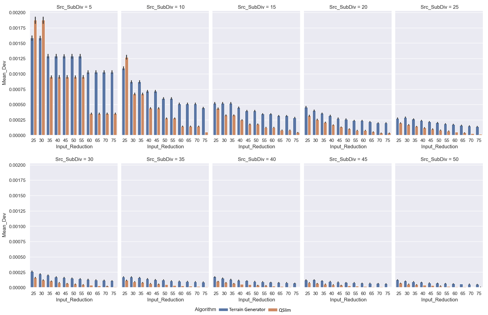
These results focus on the most revealing set of tests the 25-75% range at each subdivision level
Here we can see QSlim outperforms TGS in almost every case apart from when subdivisions = 5 an 10, where TGS out performs it slightly at 25%, 30% and 25% respecively.
We can clearing also see Qslim does much better when the start mesh is larger. It is able to pull geometry out of flat uniform areas while preserving geometry in complex areas
Findings Pt4
Heat map visualisations of three different reduction rates at 50 subdivisions
50 Subdivisions @5% of original geometry. Qslim is on the right, TGS is on the left. Qslim is much worse here as the heatmap reflects
50 Subdivisions @10% of original geometry. Qslim is on the right, TGS is on the left. Qslim is still worse here as but they are much more evenly matched
50 Subdivisions @50% of original geometry. Qslim is on the right, TGS is on the left. Qslim is much better than TGS here, the heatmap shows Qlsim is almost completely blue while TGS has lots of tequoise and ligher colours especially around mountains
Findings Pt5
We can say that Qslim is not better in 100% of cases, however it is better in a vast majority of cases.
Reguarding out most impactful questions we ran a linear model to determine what had the largest impact out of our three variables, The simpleification algorithm, the reduction rate and the subdivisions.
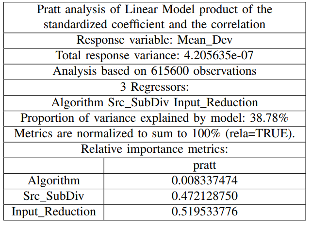
From this we can see that Reduction rate has the largest impact on results, this is what we would expect.
Next most impactful was the subdivision level again, not unexpected
The simplification algorithm had the lowest impact on geometric deviation, but it did have a measurable one. The other factors can be much more impactful.
Implications
From the results we can say that Qslim is ineffective at creating a simplified mesh of 1000 triangles or lower. In these cases it is better to just use the terrain generator.
The same is also true if the input mesh is 1000 triangles or lower. Qslim doesn't produce acceptable results with small input meshes
However, when simplifying a mesh 1000 triangles is really not very many triangles, at any reasonable triangle count, Qslim produces significantly better results, esepcially if at least 40% of the original mesh is kept
Limitations
This anyalsis has some limitations. Starting with the meshes, they arent 1 contiguous mesh they are 162 seperate meshes, the largest indivudal mesh is 15.6k triangles which is relatively low. They are also flatplane meshes - they do not enclose themselves.
The TGS algorithm is also limited, it was unable to produce results for 5 test cases due to the subdivision LOD generation.
The TGS algorithm is also only showing 1 type of terrain, the results for differnet biomes or terrain generation algorithms may be differnet
Finally, we did not measure visual quality, we measured shape presevation accuracy. This does not mean Qslim produced results that actually looked better than TGS, subjectively they may look better or worse. We did not measure this to avoid needing human participants.
Source shape with no terrain generation algorithm applied, with some subdivisions
Software Testing
Software testing the computing artefact underwent included, custom unit testing for the CLI interface, stress testing and acceptance testing for the automated expirment process, which acculuated 15hrs of uninterrupted running. Finally validation of Qslim was undertaken to ensure it was prodecusing results inline with its creators findings.
Ehtical COnsiderations
No human participants for this study where needed or used.
Environmentally, no data center was needed either, just a desktop computer.
All the Software frameworks where appropriately licensed (MIT, GNU GPL, zlib, Apache 2.0 and GPLv3)
Algorithms are available online published by the original authors for research and development
Some algorithms may have IP controls attached for commerical venture
No breaches of the british computing society ethical standards